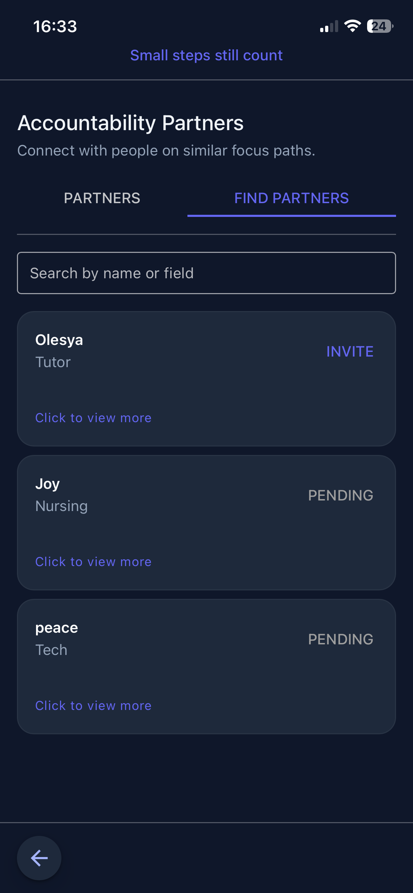
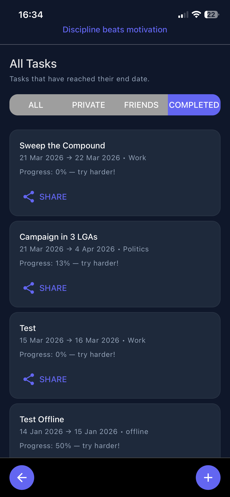
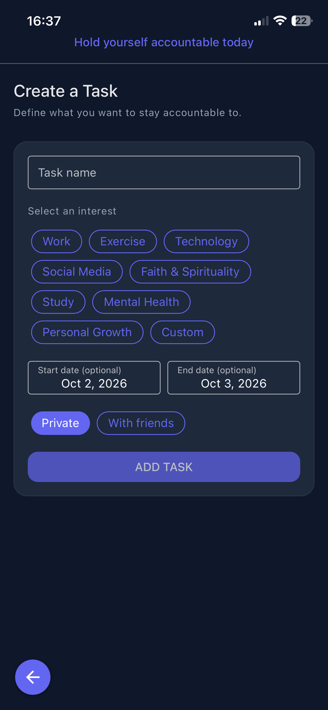
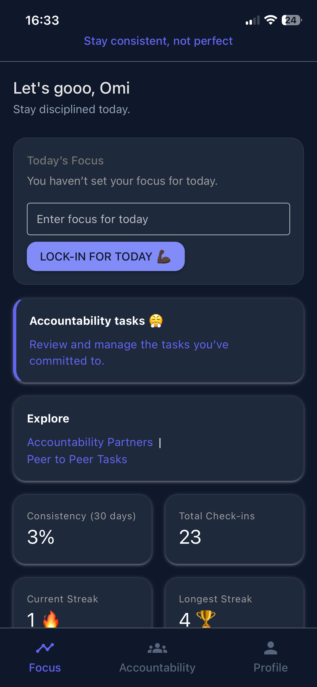
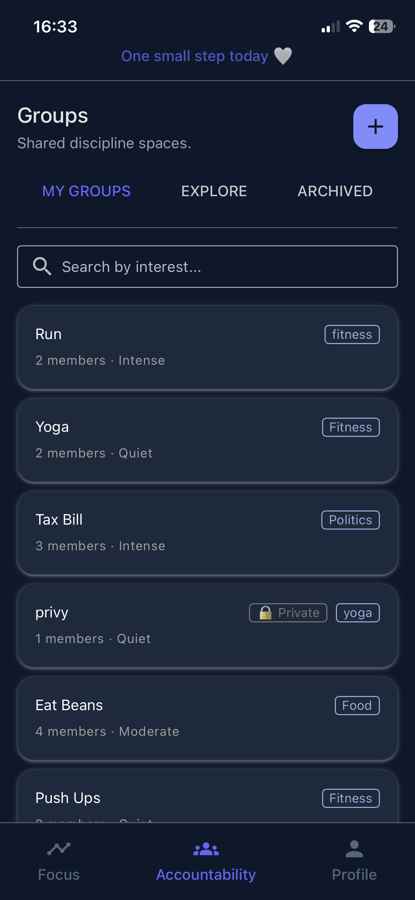
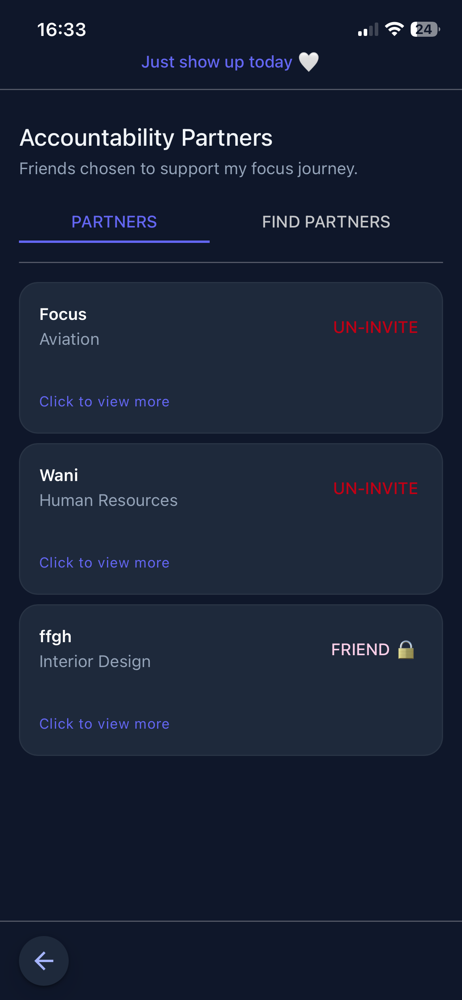

MOBILE PRODUCT · 0 → 1 · FOUNDER · PRODUCT BUILDER
Focus.app
Building an accountability platform to help people build discipline, stay consistent, and finish what they start.
OVERVIEW
I built the product I wanted to see.
Focus.app is a productivity and accountability platform I conceived, designed, developed, tested, and brought to mobile.
I built the product around a simple observation: many people have meaningful goals and great ideas, but struggle to follow through when motivation fades or there is no structure or support system around them.
I owned the product across its lifecycle, from defining the problem and product experience through feature development, quality assurance, release, and iteration.
MY ROLE
Founder, product manager, and builder.
Product
Defined the problem, product vision, user experience, requirements, workflows, features, and product priorities.
Design & Build
Designed and built the application, turning product ideas and workflows into working mobile experiences.
Quality
Planned and performed functional, regression, and user acceptance testing while investigating issues and improving usability.
Launch & Growth
Managed mobile releases and created the product messaging and content used to communicate Focus.app.
DISCOVERY
The problem wasn't a lack of ideas.
People abandon great ideas, unfinished books, business plans, fitness routines, films, and creative projects not necessarily because they lack talent, but because they lack structure, discipline, or the right support system.
We often tell our friends, “Let's start this together.” But familiarity, poor follow-up, and misaligned commitment can slowly kill momentum.
Passion fades. Focus is lost. Goals remain unfinished.
That was the gap I wanted Focus.app to address: helping people connect with like-minded individuals who can hold them accountable and whom they can hold accountable in return.
PRODUCT DEFINITION
Turning accountability into a product experience.
Focus Tracking
Designed functionality around helping users stay focused on the work and commitments that matter to them.
Accountability Tasks
Created task and commitment experiences that make responsibilities clearer and easier to follow through on.
Habits & Streaks
Built consistency features that help users see repeated action and maintain momentum.
Reminders
Added reminders to support users in returning to their commitments and maintaining consistency.
Accountability Partners
Designed the product around peer-to-peer accountability so users can support and challenge one another.
Productivity Insights
Included dashboards and progress views to help users understand their activity and consistency.
USER FLOW
From intention to accountability.
PRODUCT VISION
Build discipline. Stay accountable.
Focus.app is for people who are serious about discipline, consistency, and becoming the best version of themselves.
I built the product around the belief that there is no such thing as overnight success. Meaningful results are built through consistency, accountability, and showing up even when motivation fades.
The long-term vision is to make it easier for driven people to find the right support system, stay focused despite daily distractions, and actually finish what they start.
PRODUCT EXPERIENCE
A closer look at the product.



DELIVERY
Building the product while thinking like a PM.
Because I built Focus.app myself, product decisions were closely connected to implementation decisions. I had to continually balance what would create value for users with what could realistically be built, tested, and maintained.
I worked across the application's frontend, backend services, authentication, database, notifications, synchronization, and mobile platforms.
This allowed me to move from product requirements to working functionality quickly while keeping the intended user experience in view.
VALIDATION
Quality was part of building the product.
Functional testing
Validated core features and user workflows against their intended behaviour.
Regression testing
Re-tested existing functionality after changes to ensure new work did not introduce unexpected issues.
Mobile testing
Tested the application across Android and iOS environments and different device experiences.
Performance & reliability
Worked on application performance, synchronization reliability, and overall usability as the product evolved.
LAUNCH
From idea to a live mobile product.
I managed the product through development, release preparation, testing, and deployment across Android and iOS.
Launch was treated as the beginning of the product lifecycle rather than the end. Production behaviour, usability observations, and feedback provided opportunities for continued improvement.
PRODUCT COMMUNICATION
I also built the story around the product.
Building Focus.app extended beyond the application itself. I developed the messaging used to explain the problem, the product vision, and why accountability matters.
The messaging focuses on a simple idea: people often do not need another reminder that their goals matter. They need structure, consistency, and people who will help them keep showing up.
I created the product communication across the Focus.app website and social media, translating the product concept into language that could connect with the people it was built for.
AI-ASSISTED PRODUCT DEVELOPMENT
Using AI to accelerate the product lifecycle.
I used AI tools to support product ideation, requirements exploration, documentation, development, testing, debugging, and product analysis.
AI helped accelerate execution, but product decisions remained grounded in the problem being solved, the intended user experience, technical constraints, and observed product behaviour.
LEARNINGS
What building Focus.app taught me.
Start with the behaviour.
The strongest product decisions came from understanding the behaviour I wanted to support rather than starting with a list of features.
Accountability changes the experience.
Adding another person changes how users experience commitment, motivation, and progress.
Product and engineering are connected.
Building the product myself gave me a deeper understanding of the trade-offs between user value, implementation effort, reliability, and time.
PRODUCT IN ACTION
A closer look at Focus.app.



TECHNOLOGY